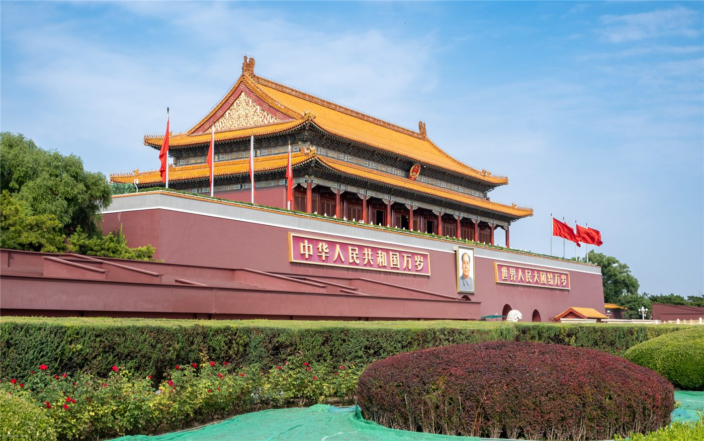

장쩌민 탄생 100주년 기념대회, 17일 베이징 인민대회당서 개최
장쩌민(江澤民) 전 국가주석 탄생 100주년 기념대회가 8월 17일 오전 10시 베이징 인민대회당에서 열린다. 중앙방송총국과 신화망이 현장을 생중계한다.
주유민 기자 · 2026.08.17
橋중국

중국 관영매체 보도에 따르면 기념대회는 17일 오전 인민대회당에서 성대하게 거행되며, 시진핑 국가주석이 참석해 연설할 예정이다. 중앙라디오TV총국(CMG)과 신화망이 대회를 생중계한다.
광고 문의 · 300×250장쩌민 전 주석은 1989년부터 2002년까지 중국공산당 총서기를, 1993년부터 2003년까지 국가주석을 지냈다. 그의 재임기는 홍콩·마카오 반환, 세계무역기구(WTO) 가입 협상 타결 등 중국의 대외 개방이 확대된 시기와 겹친다. 2022년 11월 상하이에서 별세했다.
중국에서는 주요 지도자의 탄생 100주년에 맞춰 기념대회를 여는 관례가 있다. 행사는 통상 생애와 업적을 정리하는 연설, 기념 출판물 발간, 다큐멘터리 방영 등으로 구성된다.
해외 화인 사회에서도 이 시기는 관심 대상이다. 1990년대 중국의 대외 개방과 화교·화인 정책 정비가 맞물리며 귀국 투자와 교류 채널이 넓어졌고, 그 흐름을 기억하는 세대가 여전히 각국 화인 사회의 중추이기 때문이다.
華橋時報는 기념행사의 사실관계와 일정을 전할 뿐, 정치적 평가를 덧붙이지 않는다.
출처·참고 (사실 확인용 — 본문은 직접 재작성)
· Huanqiu (2026.08.16)
· Huanqiu (2026.08.16)